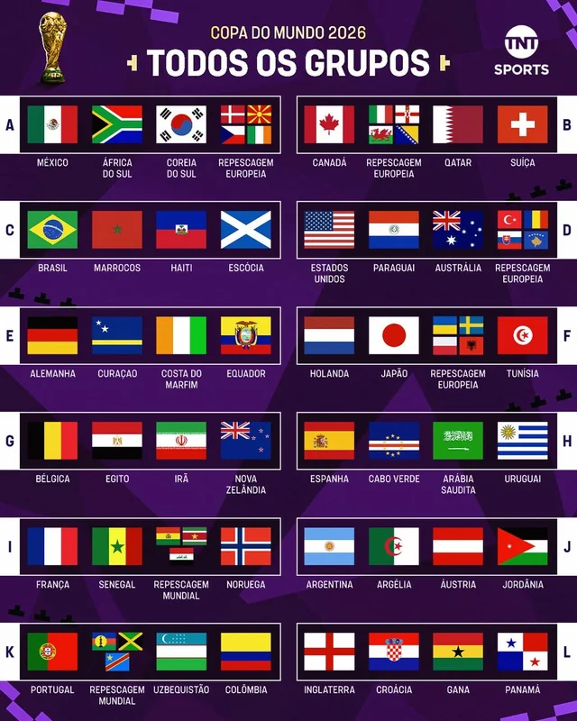

Claro! Você pode colocar esses textos antes da tabela de cada grupo no seu site.
Grupo A O Grupo A reúne tradição, determinação e o sonho de fazer história. México, África do Sul, Coreia do Sul e a representante da repescagem europeia prometem uma disputa intensa desde a primeira rodada. Com estilos de jogo diferentes e torcidas apaixonadas, cada partida será uma batalha pela classificação. Neste grupo, qualquer detalhe pode fazer a diferença entre a glória e a despedida precoce.
Grupo B Canadá, Catar, Suíça e a seleção vinda da repescagem europeia formam um grupo marcado pelo equilíbrio. A força física dos canadenses, a experiência suíça e a ambição das demais seleções criam um cenário imprevisível. A busca pelas vagas no mata-mata promete emoção até os minutos finais da última rodada.
Grupo C O Brasil chega como um dos favoritos, mas encontrará adversários determinados em seu caminho. Marrocos, Haiti e Escócia sonham em surpreender o mundo e provar que na Copa não existem jogos fáceis. Será um grupo repleto de paixão, talento e momentos capazes de emocionar milhões de torcedores ao redor do planeta.
Grupo D Estados Unidos, Paraguai, Austrália e a representante da repescagem europeia compõem um dos grupos mais competitivos da competição. A força coletiva, a velocidade e a disciplina tática estarão presentes em cada confronto. Aqui, cada ponto conquistado poderá valer ouro na corrida pela classificação.
Grupo E A Alemanha lidera um grupo que também conta com Curaçao, Costa do Marfim e Equador. Tradição, talento e muita vontade de vencer tornam este grupo um dos mais interessantes da primeira fase. Cada seleção chega carregando o sonho de avançar e escrever um novo capítulo em sua história mundialista.
Grupo F Holanda, Japão, Tunísia e a seleção da repescagem europeia prometem uma disputa eletrizante. Com estilos de jogo distintos e muita qualidade técnica, o Grupo F pode reservar grandes surpresas. Os torcedores podem esperar partidas intensas, cheias de emoção e momentos inesquecíveis.
Grupo G Bélgica, Egito, Irã e Nova Zelândia entram em campo sabendo que cada jogo será decisivo. A experiência europeia, a técnica africana, a organização asiática e a determinação oceânica transformam este grupo em um verdadeiro confronto de continentes. A luta pela classificação será feroz até o último apito.
Grupo H Espanha, Cabo Verde, Arábia Saudita e Uruguai formam um grupo que mistura tradição e ambição. Com campeões mundiais, seleções emergentes e torcidas apaixonadas, o espetáculo está garantido. Cada partida será uma oportunidade para criar novos heróis e viver momentos históricos.
Grupo I França, Senegal, Noruega e a seleção vinda da repescagem mundial prometem protagonizar grandes confrontos. O talento individual e a força coletiva estarão presentes em cada duelo. Este grupo reúne equipes capazes de sonhar alto e que lutarão até o fim por uma vaga na próxima fase.
Grupo J Argentina, Argélia, Áustria e Jordânia chegam determinadas a deixar sua marca na competição. O Grupo J combina tradição, organização e espírito de superação. Em uma Copa do Mundo, os favoritos entram em campo com responsabilidade, mas os azarões carregam a coragem necessária para desafiar qualquer prognóstico.
Grupo K Portugal, Colômbia, Uzbequistão e a representante da repescagem mundial compõem um grupo repleto de qualidade técnica e competitividade. Os confrontos prometem ser equilibrados e emocionantes, com seleções dispostas a lutar por cada bola como se fosse a última. Um grupo onde qualquer resultado pode mudar completamente a classificação.
Grupo L Inglaterra, Croácia, Gana e Panamá fecham a fase de grupos com uma combinação perfeita de tradição, talento e paixão pelo futebol. Cada seleção carrega consigo sonhos, esperanças e uma nação inteira torcendo por seu sucesso. A disputa será intensa, mas apenas os mais preparados seguirão rumo ao objetivo maior: conquistar a Copa do Mundo de 2026.
O Sonho Continua A fase de grupos é apenas o começo da jornada. Após semanas de emoção, lágrimas, superação e momentos inesquecíveis, apenas as melhores seleções continuarão avançando rumo ao mata-mata. A cada fase, a pressão aumenta, os desafios se tornam maiores e o sonho de erguer a taça fica mais próximo. Porém, entre as 48 seleções que iniciarão essa caminhada, somente duas alcançarão o destino final: o lendário MetLife Stadium. No dia 19 de julho de 2026, diante dos olhos do mundo inteiro, essas duas nações disputarão a partida mais importante de suas histórias. Noventa minutos poderão transformar jogadores em lendas e eternizar um país no topo do futebol mundial.